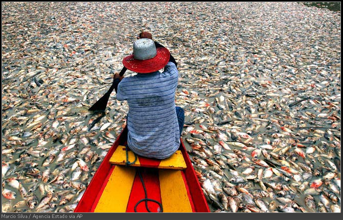

Бохез сказал, как отхезал
Мичел Сальгадо со стадиона
В день, когда в полуфинал Кубка колотиловки (Мамин Сибиряк) неожиданно вышли сразу три команды, Шарашкина контора подняла почти 15 латов, а "Челси" с трудом отстоял ничейку в живейшем матче с "Порту", "FC Zivju Fileja" обезопасил себя от }I{A6P COgOMuTA. На своём поле "рыбники" благодаря дублю Квентина Бохеза уверенно разнесли оставшийся в меньшинстве "Vot tak smrad" со щетиной 3:1.
Победа в центре поля!Со стартовым свистком команды привычно встали в "свинью", и стало понятно, что "смрадники" сделали ставку на центр поля и владение мячом - об этом красноречиво говорила схема 4-5-1. "Рыбаки" же решили сыграть в человеческий футбол без излишеств, как то лоботомия иль маникюр - простая тактика 4-4-2 должна была равномерно распределить силы хозяев меж обороной и атакой. 18-летний бельгийский форвард "феле" Бохез ринулся в дулю с первых минут - уже в дебюте он загубил выход один на один, а на 6-й минуте элегантно перекинул мяч через вратаря гостей и открыл результат к вящей радости наших уважаемых.
Киликевич-КикилевичПрошло ещё 6 минут, и счёт удвоился. Защитник Леонид Киликевич, которого тренер "рыбных" Дарко Оцоколич на послематчевой пресс-конференции назвал "недавний школьник Лёня Кикилевич" сел на "пятнистого" в районе центрального круга, после чего сдуру решил ёбнуть в сторону ворот гостей. Однако кипер-воспитанник юношеской академии "MO4A HA nEPEnPABE" Мариусс Нарвилс в этот момент считал ворох, а потому на удар Киликевич-Кикилевича не среагировал. А посему - 2:0. На перерыв уходили в разном настроении - кто с песнями, а кто с пенсией. Но еще "Теплице" надежда и второй тайм.
Поучага БогебьергаОднако и после перерыва "коричневые" как-то атаковать не спешили. Владели, да влачили. К 67-й минуте это настолько заебало Нарвилса, что голкипер отправился подавать угловой, чтобы хоть как-то намекнуть партнёрам, что стоит пытаться забивать голы. Удивительно, но этот нестандартный ход сработал - подачу с угла поля замкнул эстонец Герд Клаас. Болельщики "смрада" и те, кто закинул на эту команду зюзе (вот уж, как говорится, не обессудьте) оживились, но всего на 5 минут. По истечении этого срока защитник "коричневеньких" Алберту Жордау зачем-то отдал мяч Бохезу, который был неумолим - 3:1. Тут уже и нападающий гостей Ян Богебьерг догадался, что надо что-то делать. За 9 минут очень перспективный 22-летний форвард набрал две жёлтых карточки и два пункта своей команде в зачёт Трофея Громилы, после чего отправился в душ раньше времени и не поучаствовал в концовке поединка.
Сухой итогПравда, надо сказать, что ничего особенного не пропустил Богебьерг. За оставшееся время его партнеры вдесятером создали момент для Галипа Бабакана (!), но он (момент) с треском был упущен, после чего Клаас схватил "горжетку" от арбитра. Что же мы имеем в сухом остатке? "Рыбаки" чётко соскочили с Хуёвого названия, отдав владение мячом сопернику (41% на 59% в обоих таймах) и могут с уверенностью говорить, что "Vot tak smrad" для них - удобный соперник (две победы в двух матчах). Теперь "FC Zivju Fileja" проведет принципиальный поединок за 9-е место с "KOKALLIKuHbI KAHuKy/IbI". "Смрадникам" же придётся во второй раз подряд доказывать право с честью носить нынешнее имя - на сей раз в изнурительной двухматчевой баталии с "FC Kixa". А там уже, в общем-то, и до "мне похуй, под каким названием играть, да и жабры мне нравятся" недалеко...
